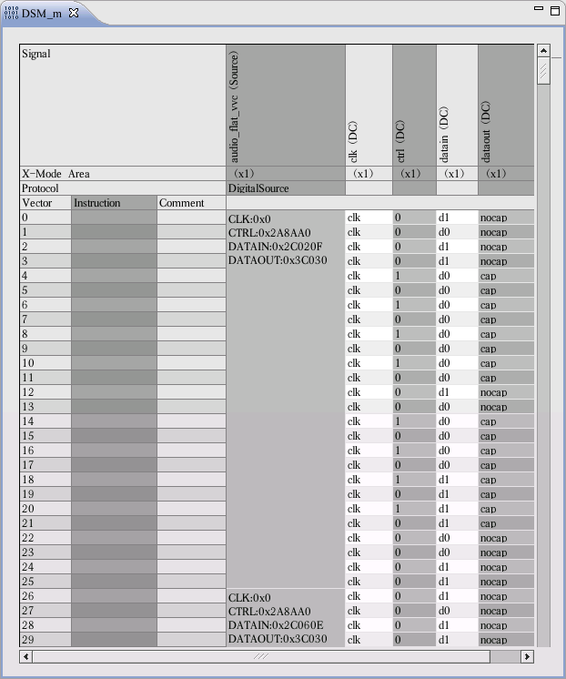
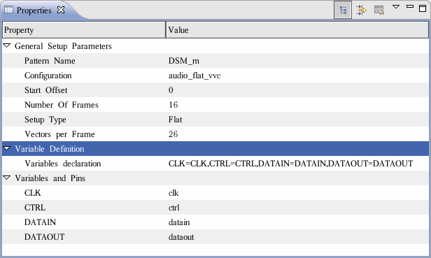

Viewing and editing content in the MAIN label
For DSM FLAT setup, the MAIN label is set as the data container. After you download the waveform data to the vector variables, the downloaded data is located in the MAIN label. The content of the label can be modified directly. You can insert vectors or instructions as you wish.
The following figure shows the MAIN label for the audio device after you download the waveform data. To make the label more readable, you can add the column for the Digital Source setup in the following step:
- Right-click the editor of the MAIN label and select Configure Layout.
- The Configure Layout window opens. Add the Digital Source setup item and click OK.
Now the Digital Source column appears in the MAIN label layout. It shows the scope of each frame and the data downloaded to the vector variables. You can directly modify the downloaded data on this column. For each variable, you can enter the hexadecimal value with a leading 0x for example, 0xFF), or decimal value, or octal value with a leading 0 for example, 011 for octal 11).

After you click the Digital Source column, the attributes of the setup are shown in the Properties view. You can directly modify the Number of Frames and Variables declaration fields in this view.

Functional changes
- Introduced before SmarTest 6.3.2
- SmarTest 6.5.2: The column for the Digital Source setup is added to make the MAIN label more readable.